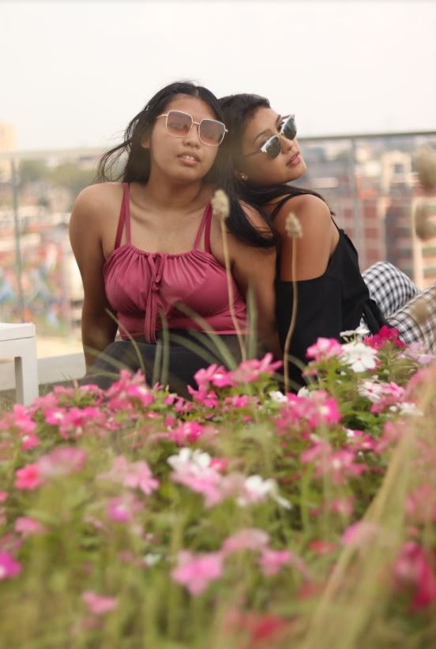

<body style="background-color: lightcoral"></body>
    <style> 
        body {text-align: center}
    </style>
<h1 style="color: aliceblue">Group Photos</h1>
<h3 style="background-color: beige"> <a href="index.HTML">Back to Main</a></h3>
    

<h2 style="color: aliceblue"> High Quality Picture of a Group Photoshoot.</h2>
<p style="color: aliceblue"> These pictures were one of my favorite things to shoot and it brought so much feeling into the photo signifying the style of Vintage and Urban coming to life.</p>